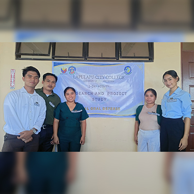
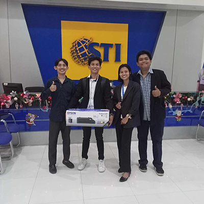
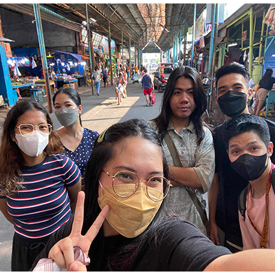
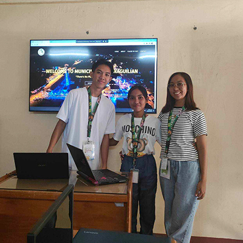

About
This Section is all about myself.
Creative IT Professional | Full-Stack Web Developer.
Driven by a passion for technology and digital art, I specialize in developing web solutions and producing engaging multimedia. I bridge the gap between back-end functionality and polished front-end design to deliver high-quality digital experiences.
- 13 May 2001
- Bachelor of Science in Information Technology
- +639651765634
- romanoespiritu146@gmail.com
- Antipolo City, Rizal, Philippines
- Open for Opportunities
Welcome to my personal website! I am a passionate Web Developer, Videographer, and Graphic Artist dedicated to delivering complete digital solutions. From custom system development to photo and video production, I build scalable systems and visual media that drive results for clients and businesses.
Professional Journey
Throughout my journey as an IT professional, I have continuously developed my technical expertise while strengthening my communication, customer service, and problem-solving skills. My experience as a Sales Technician at Geforce Computer Store has allowed me to assist customers with product recommendations, troubleshoot computer hardware and software issues, and assemble desktop computers based on their needs.
Alongside my professional career, I have also worked as a freelance Web Developer, Graphic Designer, and Video Editor, creating dynamic web applications and digital content for various clients. These experiences have helped me become a versatile professional who values continuous learning, adaptability, teamwork, and delivering high-quality results.
Skills
The following is a list of my technical, creative, and AI-assisted skills, demonstrating areas where I have gained proficiency through experience, practical projects, and continuous learning.
Web Development Skills
- HTML, CSS, JavaScript, Bootstrap, AJAX, Tailwind
- SMS Integration
- Email Integration
- Payment Integration (GCash, PayPal, Credit Cards)
- PHP Programming / Laravel Framework
- Hosting Web-Based Systems
Multimedia Skills
- Video Editing (Adobe Premiere Pro, CapCut)
- Photo Editing (Adobe Photoshop, Canva, Adobe Illustrator)
- Videography / Photography
AI & Creative AI Skills
- AI-Assisted Website Development
- AI-Assisted Photo Editing & Enhancement
- AI-Assisted Video Creation & Editing
- AI Image & Video Generation
- Prompt Engineering & AI Workflows
- ChatGPT, Gemini & Google Flow
IT Support Skills
- Hardware Troubleshooting
- Software Installation
- Basic Networking
- Technical Support
Resume
This is my resume where all my achievements are included, as well as what I accomplished during my academic years and my experiences in the IT industry.
Professional Summary
Web Developer & Multimedia Creator
A versatile developer and creative professional with experience in building web-based systems, developing responsive websites, and providing technical solutions using technologies such as HTML, CSS, JavaScript, Bootstrap, PHP, Laravel, and MySQL.
Experienced in multimedia production, including video editing, photo editing, photography, and videography using tools such as Adobe Premiere Pro, Photoshop, Illustrator, Canva, and CapCut. I also utilize AI tools such as ChatGPT, Gemini, and Google Flow to improve development, creative workflows, content creation, and productivity.
With a combination of technical, creative, and IT support skills, I aim to build practical digital solutions while continuously learning and adapting to modern technologies and AI-assisted workflows.
Education
Bachelor of Science in Information Technology
2020 - 2024
Isabela State University San Mariano Campus, Isabela Philippines
I completed my college education in this school wherein I got my NC2 certificate specializing in Computer System & Servicing and develop my technical skills specially in creating a dynamic web system and I also develop here my skills in troubleshooting computers.
CSS NC2 Passer
2023
TESDA-ISAT Ilagan Isabela
I am a certified NC2 holder, and the certificate I obtained is in Computer System and Servicing. This NC2 focuses on networking and how servers function throughout the network.
EPAS NC2 Passer
2018
TESDA-ISAT Ilagan Isabela
I am also an NC2 holder in electronics field during my senior high school days. This NC2 focuses on electronic devices and how an electronic device and equipment works.
Senior High School Graduate
2018 - 2020
Reina Mercedes Vocational and Industrial School
"I completed my senior high school education in this school, where I was thoroughly molded and received numerous awards, such as the Leadership Award in the ICT Wizards club, where I served as the club's president."
Professional Experience
FREELANCE WEB DEVELOPER & DIGITAL DESIGNER - Self-Employed
2023 - Present
- Developed web-based business systems including POS, food ordering, and inventory management systems.
- Built responsive web applications using PHP, Laravel, MySQL, HTML, CSS, JavaScript, and Bootstrap.
- Provided graphic design, photo editing, and video editing services based on client requirements.
CONTENT CREATOR & AFFILIATE MARKETER - Self-Employed
May 2026 – Present
- Create and edit short-form video content for TikTok and social media platforms.
- Promote products through affiliate marketing and product-focused content.
- Monitor content performance, engagement, and audience analytics to improve content strategy.
SALES TECHNICIAN
March 2025 – May 2026
Geforce Computer Store (Gilmore Street Valencia Quezon City)
I work as a Sales Technician at Geforce Computer Store, where I assist customers with product recommendations, diagnose and troubleshoot computer issues, and assemble desktop computers for both online and in-store customers.
Supervisor
Aug 2024 – Feb 2025
Annex Ventures Company
I worked as a supervisor in a premium internet café. The name of the shop is Annex Premium Internet Cafe.
Desktop Support (OJT Intern)
April, 2024 – June, 2024
Foundever Asia Inc.
I worked as an On-the-Job Training (OJT) trainee at Foundever Asia Inc., a company specializing in call center operations. My primary responsibilities involve managing and maintaining all the computers within the organization. This includes tasks such as ensuring that all systems are running efficiently, installing necessary software updates, and conducting regular maintenance checks. Additionally, I am responsible for troubleshooting any technical issues that arise, whether they are related to hardware or software. This role requires me to have a keen understanding of various computer systems and a proactive approach to problem-solving to ensure minimal downtime and maximum productivity for the call center agents.
Services
I provide professional digital solutions tailored to help individuals and businesses bring their ideas to life through design, development, and multimedia content.
Video & Photo Editing
Professional video and photo editing services for social media, promotional content, YouTube, and business marketing materials.
Graphic Design
Creative designs including logos, brochures, social media posts, banners, business cards, and other branding materials.
Full Stack Web Development
Building custom web applications for businesses using modern tools and AI integration.
CLIENTS FEEDBACK (Past Projects)

Group Of Ray Brandon
LAPU LAPU CITY COLLEGE
* System Created: EventSched : LLCC Student Organization Event Scheduling and Management System
Malaking tulong si Sir sa Research namin, medyo relax lang kami since hindi talaga kami nag hard code. Madali nyang makuha yung details na gusto mo ipagawa lalo na pag may mga revisions at mabilis din yung output. Sabihin mo lang yung gusto mo, sya gagawa para sayo. Thank you Sir!
Group Of Francis Chavez Bernardes
LAPULAPU CITY COLLEGE
* System Created: CONLOG: ONLINE CONSULTATION SCHEDULING OF STUDENTS AND TEACHERS IN LAPULAPU CITY COLLEGE
We are very satisfied with the service, approachable yung developer at maasahan talaga sa system na ipinagawa namin. Overall magaling talaga gumawa/modify ng system si kuya ramon.

Group Of Ji Olaguer
STI Students
* System Created: Harina Cafe (Web Based Food Ordering Management System)
Authenticate like legit coderist Hahah he help me to continue my system. I have no comment dahil sobrang bilis makaintindi and sobrang bilis gumawa.

Group Of Ashley Kiel Armando
EARIST Students
System Created:
* Web Based Online Thesis Archiving System
* Web Based
Ukay Ukay Store Ordering System
Sobrang solid nyo po sir and very considerable sa mga customer, sobrang ganda din ng services and di masyado pricey ung pagpapagawa. Quality ang serbisyo, nag uupdate palagi pag may progress sa system, and very considerable sa mga clients.

Group Of Mary Trisha Joy Fugaban
ISU San Mariano Students
System Created:
* Online Document System: Student Records
Pag irarate kuya po is 10/10, kasi super approachable ka po, and yan yung rason kung bakit ikaw po yung nilapitan namin para magpatulong po sa system na project namin. And tinuturuan nyo po kami about sa system, not like the others na basta bigay na lang yung system. Dahil po sayo kuya you inspire us na makakaya naming gumawa ng sarili naming system.
Group Of Angieline Morla
ISU Roxas Students
System Created:
* Senior Citizen Information Management System
Hello po Sir, Gusto lang po namin mag Thank you ng groupmates ko sa solid na pag tulong samin para matapos yung System namin. Which is naging isang dahilan para makagraduate kami!. All throughout ginuide mo po kami about sa system po namin. Salamat po!
Get In Touch
Thank you for visiting my portfolio. If you'd like to discuss a job opportunity, collaboration, or project, feel free to contact me through any of the channels below. I look forward to hearing from you.
Location
Antipolo City, Rizal Philippines